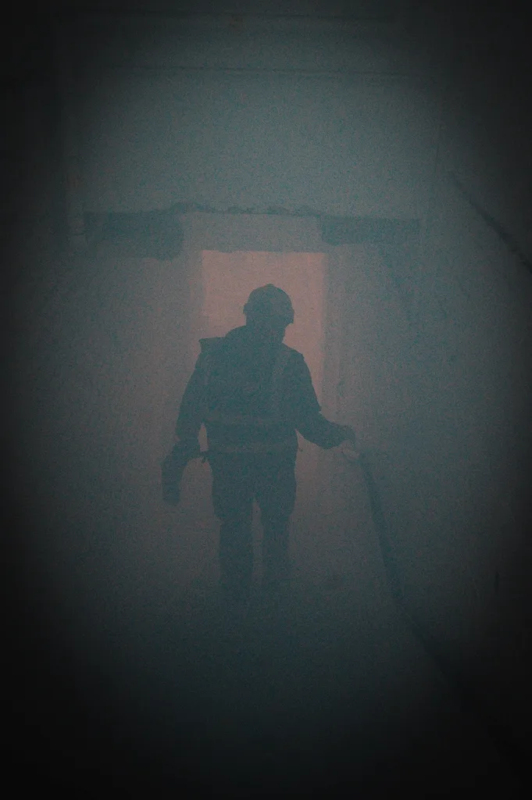
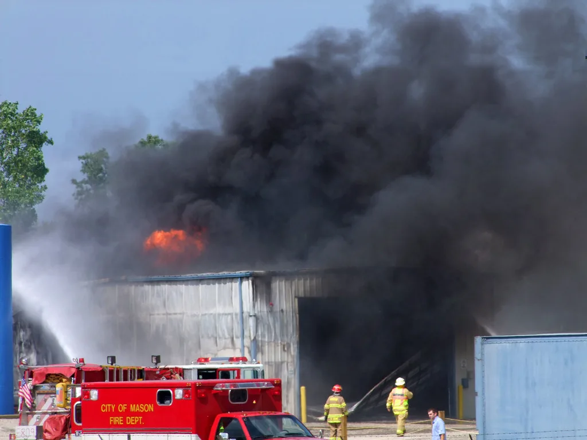

서산 대산읍 폐기물 공장 화재…6시간 반 만에 진화, 인명피해 없어
6일 오전 0시께 충남 서산시 대산읍 독곶리에 있는 폐기물 재활용업체 이르트에코 공장에서 화재가 발생했다. 이 업체는 플라스틱과 비철금속, 스크랩 등 폐기물을 가공해 고형연료(SRF)를 만드는 곳으로, 화재 당시 공장 안에는 플라스틱과 스크랩 등 가연성 폐기물 약 1000톤이 보관돼 있던 것으로 파악됐다. 다량의 가연성 물질이 쌓여 있던 탓에 불길이 빠르게 번지며 많은 양의 연기가 치솟았다. 대산읍 일대는 대형 석유화학 공장들이 밀집한 산업단지여서, 한밤중 치솟은 연기를 본 일부 주민들은 인근 화학공장에서 사고가 난 것으로 오인해 한동안 불안해했던 것으로 전해졌다.
서산시는 화재 발생 직후인 오전 1시 23분 안전안내문자를 발송해 "인근 주민은 사고 지점에서 먼 곳으로 이동하고, 차량은 우회해 달라"고 당부했다. 짙은 연기가 가라앉지 않자 오전 3시 32분에는 "외출을 자제하고 안전에 유의해 달라"는 내용의 안내 문자를 추가로 보냈다. 소방당국은 화재 발생과 함께 대응 1단계를 발령하고 상황을 주시했으며, 인근 도로 일부에서는 차량 통행을 제한하는 조치도 함께 이뤄졌다.
다행히 화재 당시 공장 안에서 작업 중이던 인력은 없었던 것으로 확인됐다. 심야 시간대에 불이 난 탓에 생산 설비 쪽에는 사람이 없었던 것이 피해를 줄인 요인으로 꼽힌다. 다만 공장 기숙사에 머물던 외국인 직원 3명을 포함해 전체 직원 12명은 화재 발생 사실을 인지하고 즉시 대피했다. 소방당국은 이들의 안전을 확인하는 데 주력했으며, 현재까지 인명피해는 보고되지 않았다.

진화 작업에는 소방 인력과 의용소방대, 경찰 등 180여 명의 인원과 장비 40여 대가 투입됐다. 공장 안에 쌓여 있던 폐기물 물량이 많고 압축된 폐기물 더미 속에서는 불씨가 쉽게 다시 살아나는 특성이 있어 완전 진화까지는 상당한 시간이 걸렸다. 소방 관계자는 겉으로 드러난 불길을 잡은 뒤에도 폐기물 더미 내부에 남은 열기를 완전히 식히는 작업까지 신경 써야 한다고 설명했다. 소방당국은 화재 발생 약 6시간 30분 만인 이날 오전 늦게 큰 불길을 잡는 데 성공했다고 밝혔다.
지역 주민들은 한밤중 하늘을 뒤덮은 연기와 잇따른 안전안내문자에 놀란 기색을 보였다. 일부 주민은 매캐한 냄새를 호소하며 창문을 닫고 실내에 머물렀다고 전했다. 두 차례에 걸친 안전안내문자 발송은 심야 시간대 대규모 화재에서 자칫 늦어질 수 있는 주민 대응을 앞당겼다는 평가를 받는다. 서산시는 대기질 영향 여부를 함께 점검하며 추가 안전 조치가 필요한지 살펴볼 계획이라고 설명했다.

소방당국은 큰불을 잡은 뒤 정확한 화재 원인과 피해 규모를 조사할 방침이라고 밝혔다. 아직 구체적인 발화 원인은 확인되지 않은 상태로, 당국은 공장 내부 폐기물 보관 구역을 중심으로 발화 지점과 경위를 들여다볼 계획이다. 폐기물 재활용시설에서 보관 중인 가연성 자재가 대규모 화재로 이어진 사례가 반복돼 온 만큼, 이번 사고를 계기로 유사 시설에 대한 폐기물 적재량 관리와 소방 안전 점검 필요성도 함께 제기될 것으로 보인다. 인명피해가 없었던 만큼 당국은 추가 피해 방지와 재발 방지 대책 마련에 주력할 방침이다.